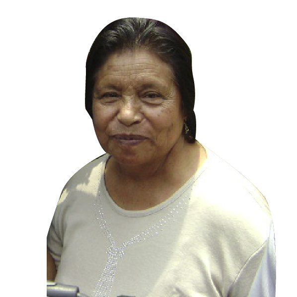

Fecha de Nacimiento:20 de Agosto del 1930.
Ocupación:Ama de Casa.
Acerca de
Nacida en la Ciudad de Puebla, Pue.
Dedicado a ser la Ama de Casa y Costurera.
Gustos por la musica de los 60´s.
Al igual que suele pasar sus ratos libres viendo cociendo, leyendo libros y hacer comida.
Actualmente esta en casa.
Álbum favorito
Frase Característica
“Saber conocer la vida simple, es disfrutar de las pequeñas cosas”
-Clara
Habilidades
💙 Seriedad
💙 Profesionalismo
💙 Alegre
💙 Conservador